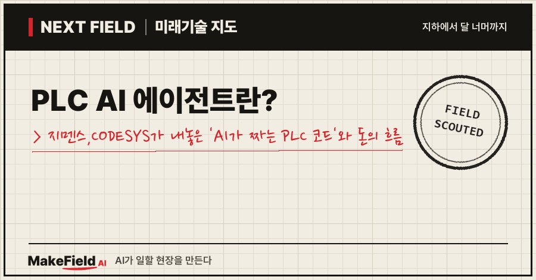
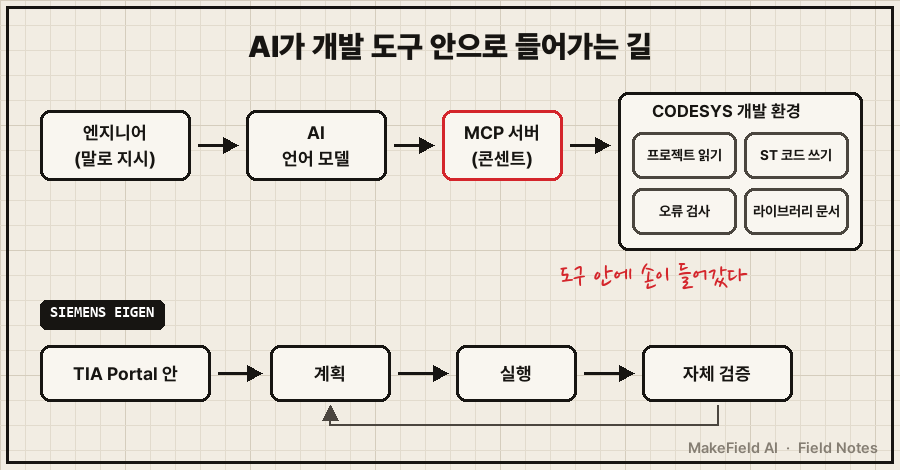
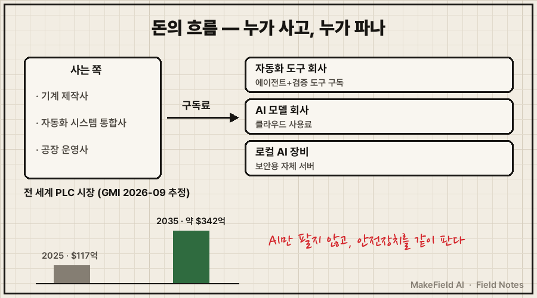
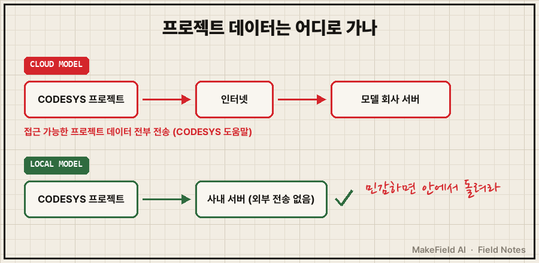

한 줄 요약: 2026년 4월 지멘스는 PLC 코드·HMI 화면·장치 설정을 스스로 계획하고 실행·검증하는 'Eigen Engineering Agent'를 상용 출시했고(itwire, 2026-04-21), PLC 개발 도구 CODESYS는 AI가 개발 환경에 직접 들어가 코드를 읽고 고치는 MCP 서버를 내놓았습니다(CODESYS 데이터시트, 2026-05). 공장 기계 프로그램을 AI가 짜는 'PLC AI 에이전트'는 이제 시험 단계가 아니라 '사는 제품'이 됐어요.
"챗GPT가 코딩한다는 건 알겠는데, 공장 기계 프로그램도 짠다고?" 궁금했던 분, 그리고 이 변화로 누가 돈을 벌게 되는지 알고 싶은 분을 위한 글입니다. 2026년 10월 기준 공개 자료로 차례로 풀어볼게요.
1. PLC AI 에이전트란 무엇인가요
PLC AI 에이전트란 공장 자동화 프로그램(PLC 코드)을 사람이 말로 지시하면, AI가 개발 도구 안에서 직접 코드를 쓰고 오류를 확인하고 고치는 프로그램이다. 질문에 답만 하는 챗봇과 달리 '도구를 직접 만지는 손'이 있다는 점이 핵심이에요.
💡 PLC(프로그래머블 로직 컨트롤러) — 컨베이어·모터·밸브를 정해진 순서대로 켜고 끄는 산업용 소형 컴퓨터. 기계의 '반사신경'이다.
💡 AI 에이전트 — 시키면 답만 하는 게 아니라, 계획을 세우고 도구를 써서 일을 끝까지 해내는 AI. '말하는 비서'가 아니라 '손이 있는 조수'다.
지금까지 PLC 프로그램은 엔지니어가 개발 도구 앞에 앉아 한 줄씩 쓰고, 컴파일 오류를 보고, 다시 고치는 일이었어요. 2026년 상반기 두 회사가 이 반복을 AI에게 맡기는 제품을 냈습니다.
| 구분 | 지멘스 Eigen Engineering Agent | CODESYS MCP 서버 |
|---|---|---|
| 붙는 도구 | 지멘스 PLC 개발 도구 TIA Portal(V19·V20·V21) | CODESYS 개발 환경(V3.5.22.1 이상) |
| 하는 일 | PLC 코드(SCL·LAD) 생성, 컴파일 오류 수정, HMI 화면, 드라이브·네트워크 설정 | 프로젝트 탐색·읽기, ST 코드 작성·수정, 오류 검사, 라이브러리 문서 조회 |
| 언어 제한 | 글자 언어·그림 언어 모두 언급 | 글자 언어(ST)만 쓰기 가능, 그림 언어는 읽기만 |
| 파는 방식 | 구독, 지멘스 마켓플레이스(DEX), 1개월 무료 체험 | 1년 구독 묶음(PDE)에 포함, 30일 데모 |
(출처: 지멘스 제품 페이지, CODESYS 데이터시트·도움말 2026)
💡 TIA Portal — 지멘스 PLC를 프로그래밍하는 공식 개발 도구.
💡 CODESYS — 여러 제조사 PLC에 공통으로 쓰이는 개발 도구. 특정 회사에 묶이지 않는 'PLC계의 공용 운영체제'에 가깝다.
💡 ST·SCL·LAD — ST(구조화 텍스트)는 글자로 쓰는 PLC 언어(파이썬·C와 비슷), SCL은 지멘스판 ST, LAD(래더)는 전기 회로처럼 사다리 그림으로 그리는 언어다.
2. 어떻게 작동하나요 — 'MCP'라는 콘센트
CODESYS MCP 서버는 AI 언어 모델이 공개 규격인 모델 컨텍스트 프로토콜(MCP)을 통해 CODESYS 개발 환경과 직접 대화하게 해 주는 추가 기능이다(CODESYS 데이터시트, 2026-05-04). AI가 쓸 수 있는 도구로 '프로젝트 트리 보기', 'ST 코드 읽기', 'ST 코드 부분 교체', '입출력 구성 보기', '오류 검사' 등이 열려 있어요.
💡 MCP(모델 컨텍스트 프로토콜) — AI가 다른 프로그램을 직접 조작하도록 이어 주는 표준 '콘센트'. 프로그램 쪽에 이 콘센트가 있으면 어떤 AI든 꽂아서 손발처럼 쓸 수 있다.

그림 속 내용을 글로 옮기면 이렇습니다. 엔지니어가 말로 지시하면 AI가 MCP라는 콘센트를 통해 개발 도구 안으로 들어가, 기존 코드를 읽고 새 코드를 쓰고 오류 검사 결과를 받아 다시 고쳐요. 데이터시트는 쓰임새로 "방대한 기존 프로그램을 이해하기 쉽게 설명하기"와 "버그 수정·새 기능 구현"을 들었습니다.
눈에 띄는 대목이 하나 있어요. CODESYS 공식 도움말은 "내부 시험에서 Claude 모델이 ST 코드 품질이 가장 좋았다"고 적었고, 다른 MCP 호환 모델은 품질이 낮을 수 있다고 덧붙였습니다(CODESYS 온라인 도움말). 도구 회사가 특정 AI 모델을 공개적으로 1위로 꼽은 셈이에요.
3. 왜 지금 뜨나요 — 사용자 60만 명이라는 판
지멘스는 Eigen Engineering Agent를 TIA Portal 사용자 60만 명 이상이 쓸 수 있고, 출시 전 19개국 100개 이상 기업이 파일럿에 참여했다고 밝혔다(itwire, 2026-04-21). 일반 소프트웨어에서 먼저 퍼진 AI 코딩 도구의 흐름이 공장 소프트웨어로 넘어온 것으로 볼 수 있어요(추정).
지멘스가 내세운 효과는 "수작업보다 2~5배 빠른 실행", "전체 품질 최대 80% 향상", "엔지니어링 효율을 50% 향상"입니다. 다만 이 숫자는 회사가 직접 밝힌 주장이고, 독립 기관이 검증한 수치는 찾지 못했어요.
수요 쪽 배경은 단순합니다. PLC 프로그램은 기계마다 새로 짜고, 고치고, 오래된 코드를 해석하는 일이 끝없이 반복돼요. CODESYS가 첫 쓰임새로 '남이 짠 대량의 기존 코드를 설명하기'를 꼽은 것도 이 때문으로 보입니다(추정 — 데이터시트 쓰임새 기술 기반 해석).
4. 돈의 흐름 — 누가 사고, 누가 파나요
시장조사업체 글로벌 마켓 인사이트(GMI, 2026-09)는 전 세계 PLC 시장을 2025년 117억 달러, 2035년 약 342억 달러(연평균 약 11.4%)로 추정했다. PLC AI 에이전트는 이 하드웨어 위에 얹히는 '소프트웨어 구독' 층이에요. 조사 기관마다 기준값이 달라서 한 곳의 추정치로만 보는 게 안전합니다.
💡 연평균 성장률(CAGR) — 매년 평균 몇 %씩 커지는지 나타내는 숫자. 11% 안팎이면 약 6~7년에 두 배가 되는 속도다.

이하 기업명은 산업 구조 설명용 예시이며 투자 판단과 무관합니다. 돈이 흐르는 길은 세 갈래로 정리돼요.
| 파는 쪽 | 무엇을 파나 | 공개 자료에서 확인된 것 |
|---|---|---|
| 자동화 도구 회사 | 에이전트 구독 + 검증 도구 묶음 | 지멘스: DEX 마켓플레이스 구독·1개월 무료 체험 / CODESYS: 1년 자동 갱신 구독(PDE) |
| AI 모델 회사 | 클라우드 모델 사용료 | CODESYS가 Claude를 ST 품질 1위로 명시 |
| 로컬 AI 장비·서비스 | 사내에서 돌리는 모델 | CODESYS가 민감 프로젝트엔 로컬 모델 권장 |
(출처: 지멘스 제품 페이지, CODESYS 데이터시트·도움말 2026)
흥미로운 건 CODESYS의 판매 방식이에요. MCP 서버를 따로 팔지 않고 정적 분석(코드 규칙 검사)·테스트 매니저(자동 시험)·Git 연동(버전 관리)과 한 묶음 구독(PDE)으로 넣었습니다(CODESYS PDE 데이터시트). AI가 코드를 쓰는 도구와, 그 코드를 검사·시험·되돌리는 도구를 같이 판다는 뜻이에요. 구독 가격은 두 회사 모두 공개 자료에서 확인하지 못했습니다.
💡 정적 분석 — 프로그램을 돌려 보지 않고 코드만 읽어서 규칙 위반·실수를 찾는 검사. 원고의 맞춤법 검사기 같은 것.
💡 Git(버전 관리) — 파일을 고칠 때마다 이전 상태를 저장해 언제든 되돌릴 수 있게 하는 도구.
5. 언제 오나요, 한계는 무엇인가요
제품은 이미 나왔지만, 공식 문서가 스스로 밝힌 한계가 분명하다. 도입 속도는 이 한계를 누가 먼저 메우느냐에 달려 있어요.

- 데이터가 밖으로 나간다: CODESYS 도움말은 클라우드 모델을 쓰면 "사용자가 접근할 수 있는 모든 프로젝트 데이터가 제공사 서버로 전송된다"고 적고, 민감한 프로젝트에는 로컬 모델을 권해요. 그림의 위 줄(빨강)이 클라우드, 아래 줄(초록)이 로컬 경로입니다.
- 되돌리기가 약하다: 같은 도움말은 "CODESYS V3는 변경을 되돌리는 방법이 제한적"이라며 Git 같은 버전 관리를 권합니다.
- 언어가 반쪽이다: CODESYS MCP 서버는 현재 ST만 쓸 수 있고, 현장에서 많이 쓰는 래더 같은 그림 언어는 읽기만 돼요.
- 사람의 검토 단계가 안 보인다: 지멘스 제품 페이지는 에이전트가 TIA Portal에서 '자율적으로' 일하고 '내장 자체 점검'으로 품질을 확보한다고 설명하지만, 사람이 승인하는 단계는 적혀 있지 않아요.
- 책임 규정은 아직 공사 중: EU는 규정 (EU) 2026/1744(2026-07-27 발효)로 기계에 들어가는 고위험 AI의 기술 요건을 AI법이 아니라 기계류 규정 안으로 옮기기로 했고, 세부 요건은 2028-08-02까지 위임법으로 정합니다(Eurogip). 기계류 규정 자체는 2027-01-20 시행이에요. 엄밀히 이 규정은 'AI가 들어간 기계'를 다루며 'AI가 짠 코드'를 직접 다루지는 않지만, 기계 안전 책임이 결국 제조사에 있다는 큰 틀은 그대로입니다.
💡 위임법 — 법 본문은 큰 틀만 정하고, 세부 기술 요건은 EU 집행위원회가 나중에 따로 정해 붙이는 하위 규칙.
정리하면 '언제 오나'의 답은 "이미 왔다, 다만 검증·데이터 보호·책임 문제를 푼 곳부터 쓴다"에 가깝습니다(추정 — 공개 문서의 한계 서술 기반 해석).
자주 묻는 질문(FAQ)
Q. AI가 짠 PLC 코드를 바로 기계에 넣어도 되나요?
A. 공식 문서도 그렇게 권하지 않아요. CODESYS는 되돌리기가 제한적이라 Git 버전 관리를 권하고, 검사·시험 도구를 같은 구독에 묶어 팝니다. 기계 안전 책임은 여전히 제조사·엔지니어에게 있어요.
Q. 래더(그림 언어)로 짠 프로그램도 AI가 고쳐 주나요?
A. CODESYS MCP 서버는 2026년 기준 ST만 작성·수정할 수 있고, 그림 언어는 읽기만 됩니다. 지멘스 Eigen은 제품 페이지에 SCL과 LAD 생성을 함께 적어 두었어요.
Q. 회사 프로젝트를 클라우드 AI에 연결해도 괜찮나요?
A. CODESYS 도움말은 클라우드 모델 사용 시 접근 가능한 프로젝트 데이터 전부가 제공사 서버로 간다고 명시했어요. 기밀 계약이나 사내 보안 규정을 먼저 확인하고, 민감하면 로컬 모델을 쓰라는 게 공식 권고입니다.
오늘의 용어 정리
- PLC — 기계를 정해진 순서대로 움직이는 산업용 소형 컴퓨터.
- AI 에이전트 — 계획을 세우고 도구를 직접 써서 일을 끝까지 하는 AI.
- TIA Portal — 지멘스 PLC 개발 도구.
- CODESYS — 여러 제조사 PLC에 공통으로 쓰이는 개발 도구.
- ST·SCL·LAD — 글자 PLC 언어 / 지멘스판 ST / 사다리 그림 언어.
- MCP — AI가 다른 프로그램을 직접 조작하게 이어 주는 표준 콘센트.
- 연평균 성장률(CAGR) — 해마다 평균 몇 %씩 커지는지 나타내는 숫자.
- 정적 분석 — 돌려 보지 않고 코드만 읽어 실수를 찾는 검사.
- Git — 고칠 때마다 이전 상태를 저장해 되돌릴 수 있게 하는 도구.
- 위임법 — 집행위가 나중에 정해 붙이는 세부 기술 규칙.
AI가 PLC 코드를 쓰는 시대는 왔지만, 도구 회사가 AI와 함께 '검사기와 되돌리기 버튼'을 묶어 판다는 사실이 이 시장의 현재 위치를 보여 줘요. 다음 Next Field에서는 또 다른 '다음 현장'을 가 볼게요. 여러분이 기계 프로그램을 AI에게 맡긴다면, 가장 먼저 확인하고 싶은 건 무엇인가요?
출처
[1] itwire(2026-04-21) — 지멘스 Eigen Engineering Agent 상용 출시, 계획·실행·검증 수행, TIA Portal 사용자 60만 명 이상, 19개국 100개사 이상 파일럿, 회사 주장 2~5배 빠름·품질 최대 80%·엔지니어링 효율을 50% 향상
→ https://itwire.com/business-it-news/data/siemens-brings-ai-to-the-physical-world-with-eigen-engineering-agent
[2] 지멘스 Eigen Engineering Agent 제품 페이지(2026) — DEX 마켓플레이스 구독·1개월 무료 체험, TIA Portal V19·V20·V21, SCL·LAD 코드 생성·컴파일 오류 수정·HMI·드라이브·네트워크 설정, 자율 실행·내장 자체 점검
→ https://www.siemens.com/en-us/products/tia-portal/eigen-engineering-agent
[3] CODESYS 온라인 도움말 — MCP 서버(2026) — ST만 작성 가능·그림 언어 읽기 전용, 내부 시험에서 Claude 모델 ST 품질 1위, 클라우드 사용 시 프로젝트 데이터 전부 전송·민감 프로젝트는 로컬 모델 권장, 되돌리기 제한으로 Git 권장
→ https://content.helpme-codesys.com/en/CODESYS%20Development%20System%20MCP%20Server/_idemcp_start_page.html
[4] CODESYS MCP 서버 데이터시트(2026-05-04) — MCP로 AI 모델과 개발 환경 연결, 프로젝트 탐색·ST 읽기·교체·입출력 구성·오류 검사 도구, V3.5.22.1 이상·PDE 구독 필요, 쓰임새(기존 코드 설명·버그 수정)
→ https://us.store.codesys.com/media/n98_media_assets/files/2101000023/2/CODESYS%20Development%20System%20MCP%20Server_en.pdf
[5] CODESYS PDE 데이터시트(2026) — 1년 자동 갱신 구독에 정적 분석·프로파일러·테스트 매니저·Git·SVN·MCP 서버 묶음, 30일 데모
→ https://us.store.codesys.com/media/n98_media_assets/files/2101000010/2/CODESYS%20Professional%20Developer%20Edition_en.pdf
[6] 글로벌 마켓 인사이트 GMI(2026-09) — 전 세계 PLC 시장 2025년 117억 달러→2035년 약 342억 달러(연 약 11.4%), 주요 기업 지멘스·로크웰·슈나이더·미쓰비시·ABB
→ https://www.gminsights.com/industry-analysis/programmable-logic-controller-market
[7] Eurogip(2026) — 규정 (EU) 2026/1744 2026-07-27 발효, 기계 내 고위험 AI 요건을 기계류 규정으로 이관, 위임법 기한 2028-08-02, 기계류 규정 2027-01-20 시행
→ https://eurogip.fr/en/machinery-regulation-2023-1230-what-the-digital-omnibus-on-ai-changes/